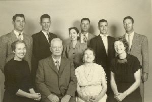
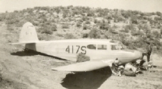

ELMONT GEORGE
(by Diana George Cluff)

Elmont was born in Bluewater, New Mexico. He was the seventh of nine children. His father's sister, Aunt Mary, was the midwife that delivered him into the world. His parents were good, happy people who loved their family and lived the gospel. His fore-fathers came to America a generation before him from England, Germany and Norway.
Life in Bluewater was filled with fun and adventure. Elmont loved hiking, playing in the canyons, swimming in Bluewater lake, outsmarting the rattlesnakes, having family parties, picnics, hay rides, watermelon busts, car races, and so much more... Elmont loved going to the family dances every Saturday night in Bluewater. His father played the banjo and his mother and siblings loved to dance. He used this experience later in his life to put on fun dances at the church.
Elmont loved to sneak onto the Reservations to watch the Indians dance or take sweat baths. He learned some of the Navajo language and has many interesting stories about them.
 When Elmont was only about seven years old he became the town repairman. He specialized in fixing washing machines but was handy in many other areas as well. He can still fix anything and is very good at mechanics.
When Elmont was only about seven years old he became the town repairman. He specialized in fixing washing machines but was handy in many other areas as well. He can still fix anything and is very good at mechanics.
Elmont learned to drive a car at eight years old! He would sit on a pillow in the driver seat while his mother worked the pedals. She proudly had her son drive her to Grant to do her shopping (ten miles away).
He was with his father when his eleven year old brother was tragically run over by a truck and remembers the experience, though he was very young.
When Elmont was in the 11th grade his father asked him to quit school to help out in the Sawmill he owned. This was the end of Elmont's formal education.
Elmont grew to be 6'5", like his forefathers from Norway. He was full of self confidence and developed a great sense of humor.
People often said Elmont looked like Gary Cooper with his black curly hair, tall thin body and distinguished face. He even handled life a lot like the actor did in the movies, in a very dignified, calm way.
Elmont signed up for service in World War II at age 20, but was prevented from going due to a heart murmur.
 Elmont married Anna Hassell at 20 years old. At 21 he built a home for his new bride and at 22 became a father for the first time.
Elmont married Anna Hassell at 20 years old. At 21 he built a home for his new bride and at 22 became a father for the first time.
Elmont always loved living by his father's and wife's family in Bluewater. When the families moved to Ashland they lived in the same area of town-and even most of them on the same street-to raise their families. This made for lots of friendships, fun and games for the families. They all tried to live the Gospel and teach their families the truth in all things.
In his early 20's, on a dare from his friends, Elmont flew his first airplane. The only problem was he didn't know how to land it! The whole village came out to watch as he bounced wildly down the runway while attempting to land the plane. After the incident he thoroughly studied the flight manual and never had problems landing again.

Elmont owned a twin engine plane by the age of 25--but it was wrecked by his brother in a landing attempt. Elmont was very hurt to lose his long awaited plane so soon after buying it but was able to forgive his brother even though he had to make payments for many years on the wrecked plane.
In his mid 20's Elmont moved his family from New Mexico to Ashland, Oregon for a better life in a land that looked very much like his fathers land in Norway, Germany and England. In Oregon Elmont became a logger with his own truck.
Elmont soon had his own logging operation with many trucks and others men working for him. Elmont always worked for himself in the jobs he did. He figured out what he liked to do, acquired the tools and did the job. He was always a success at everything he tried.
 In the summer, Elmont always took one of his small children to work with him in the woods. He looked after them as he loaded log trucks and had fun talks with them as he drove them up and down the mountain to the job-site.
In the summer, Elmont always took one of his small children to work with him in the woods. He looked after them as he loaded log trucks and had fun talks with them as he drove them up and down the mountain to the job-site.
Elmont had a major logging accident but remained in good spirits through it all and was even able to joke with his family when they came to see him in the hospital the day of the accident. He suffered being out of work for months as his body healed but got through the tough times and went on to make a good living for his family as he had always done.
Elmont helped in the building of the Freeway in our Valley. He also built roads up mountains for microwave station sites in Utah, Nevada, and other places in the early 1960's. He moved his family to Nevada and all lived in a Motel for a few months to be together.
Elmont eventually returned to flying and became a personal pilot for the rich and famous. His flying has taken him all over the United States and Canada. He ran the Ashland Airport for years and helped many to get into flying. He was in the Newspaper many times with articles about his life and work. He had a few airplane problems when flying but was always protected and has lived through it all.
In 1964 Elmont became a Bishop in Ashland and helped to build the Ashland chapel.
Elmont always took time to play with his children, have family prayers and meals together each night. He was a fun 'Santa' each Christmas and read the story of the birth of Christ by Christmas lights by the fireplace on Christmas Eve.
 He always stressed obedience. To get the children to behave, all he had to do was touch his belt buckle, though he never actually used the belt. Sometimes if the children were misbehaving in the car, they would have to get out and walk for a short ways. Other times the children had to do laps around the house at night. If late for dinner they would have to sit on a step by the dinning table for a while before eating. As the family came to dinner, all would kneel by their chairs for family prayer before eating.
He always stressed obedience. To get the children to behave, all he had to do was touch his belt buckle, though he never actually used the belt. Sometimes if the children were misbehaving in the car, they would have to get out and walk for a short ways. Other times the children had to do laps around the house at night. If late for dinner they would have to sit on a step by the dinning table for a while before eating. As the family came to dinner, all would kneel by their chairs for family prayer before eating.
Much laughing went on in the family home. Elmont loved to play tricks, tease and tell jokes for a laugh and to keep things light and fun. He also learned to play a few great songs on the piano and banjo. Elmont has always had a happy, positive personality.
He loved to throw parties at his home for other couples and go for moonlight rides down the mountains on sleds with others in the winter.
Elmont has always watched out for his family and others. He gives assistance when he sees a need.
Elmont has always loved to spend time with his brothers and do good deeds for others; fixing their cars, houses or whatever they need. He and his brothers love to buy cars and other toys together and have always ended up with many same kinds of cars, and toys. The brothers have even spent time in their older years tending each other when needed.
Elmont is an avid traveler and loves to take his motor home on trips to the coast and throughout the Western US. In his 50's, Elmont visited Wales, England and Norway to look up his ancestry. He was amazed to find a castle in Wales that he felt a very close connection with and felt he knew all the details of the castle so well, as if he'd been there before. He told his family riding in the car all the details of the castle and grounds before they even entered. When they toured the Castle, they were surprised to find that all was just as he had said.
In his 70's Elmont built a large beautiful home on top of a mountain in Ashland. He even fell and cut up the trees in his yard with his portable sawmill. He still lives there today and it is so peaceful to visit and see the home with the beautiful mountains, valley and lake below.
Elmont has helped three of his sons build their homes in his later years of life, sometimes traveling to other states to build the huge homes.
Elmont loves to read and has spent many hours learning about many things and places. He is always interesting to talk to about life.
Elmont was a Dance DJ in Oregon and California in the 70's and 80's. He always loved to dance and plays good dance music.
Elmont has lived through heart trouble. One day as he was driving he passed out but was able to get the car stopped in time. He happened to stop in front of a hospital so his life was saved.
Elmont is a father to 13 children. Eight of his children are natural while the other five are a result of his 1993 marriage to LaVona.
He is grandfather to at least 76 children and 25 great grandchildren. In total he has, on his 80th birthday, over 101 descendants. He spends each day loving and serving his wife, his children, his brothers and sisters and the Lord. He makes life wonderful when he's around us all. He still stands tall and straight, does a hard days work each day and keeps active with caring for others and taking trips around the West. We are all so proud to be his children and are thankful for all he has taught and done for us.